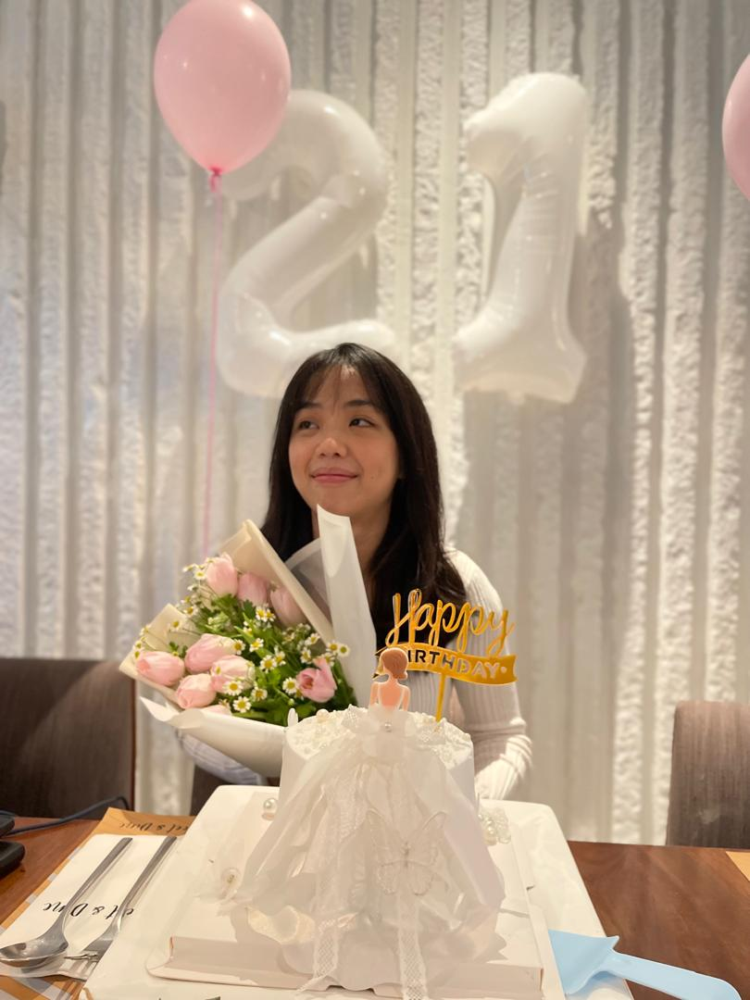
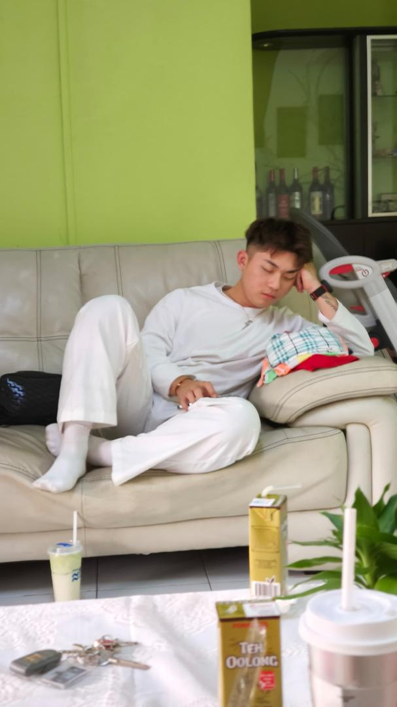
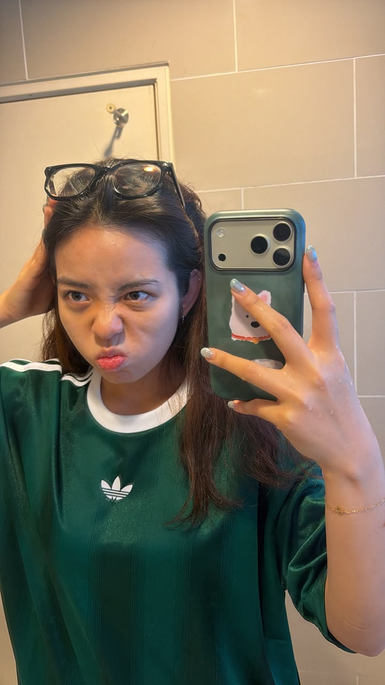
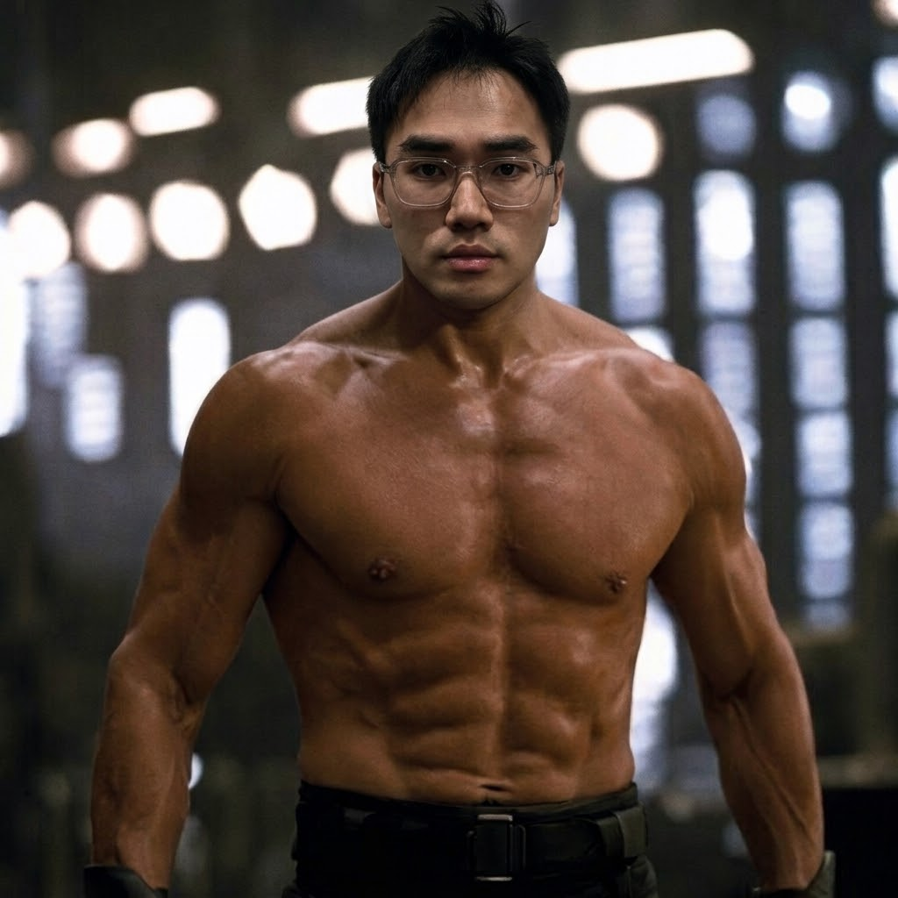
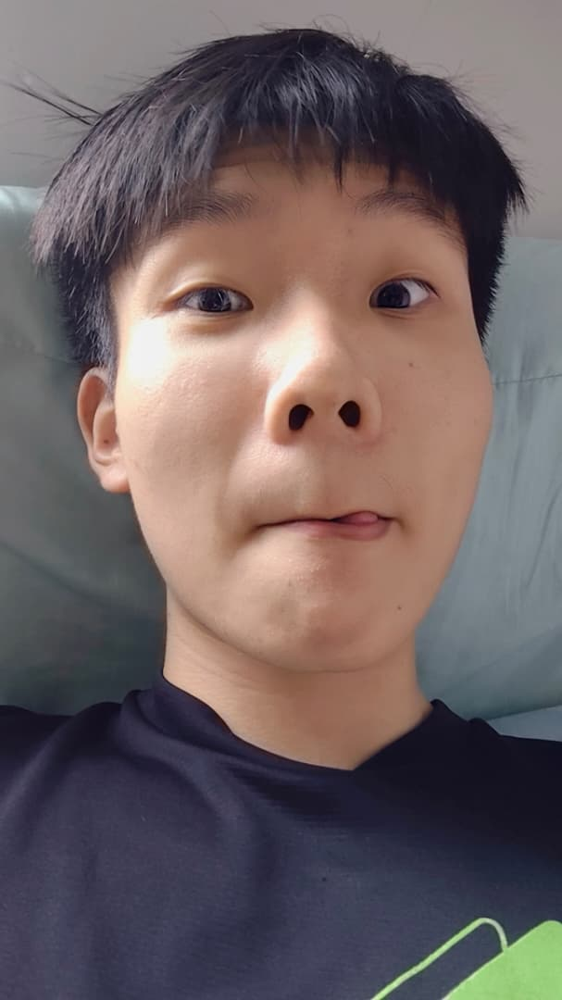
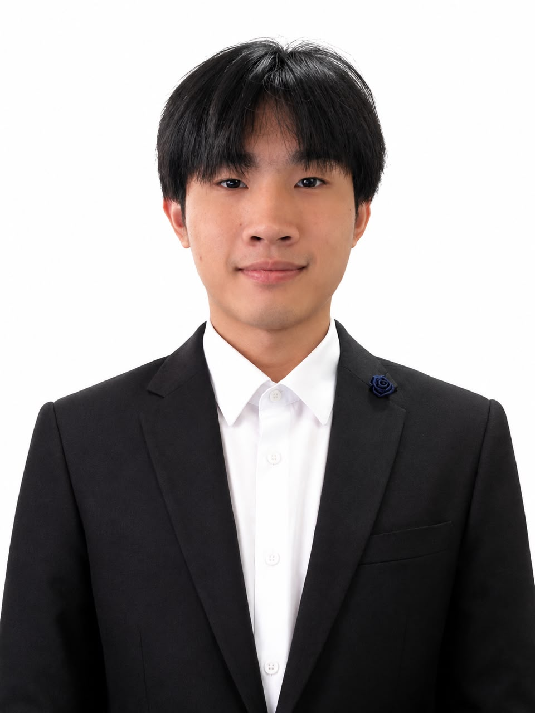
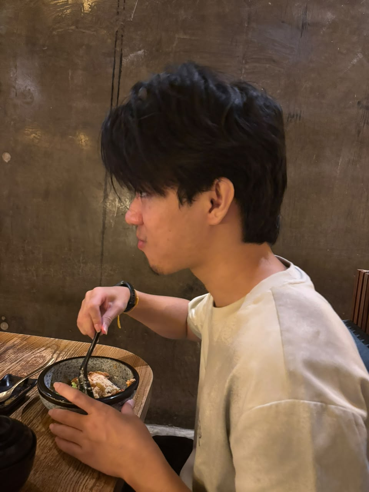
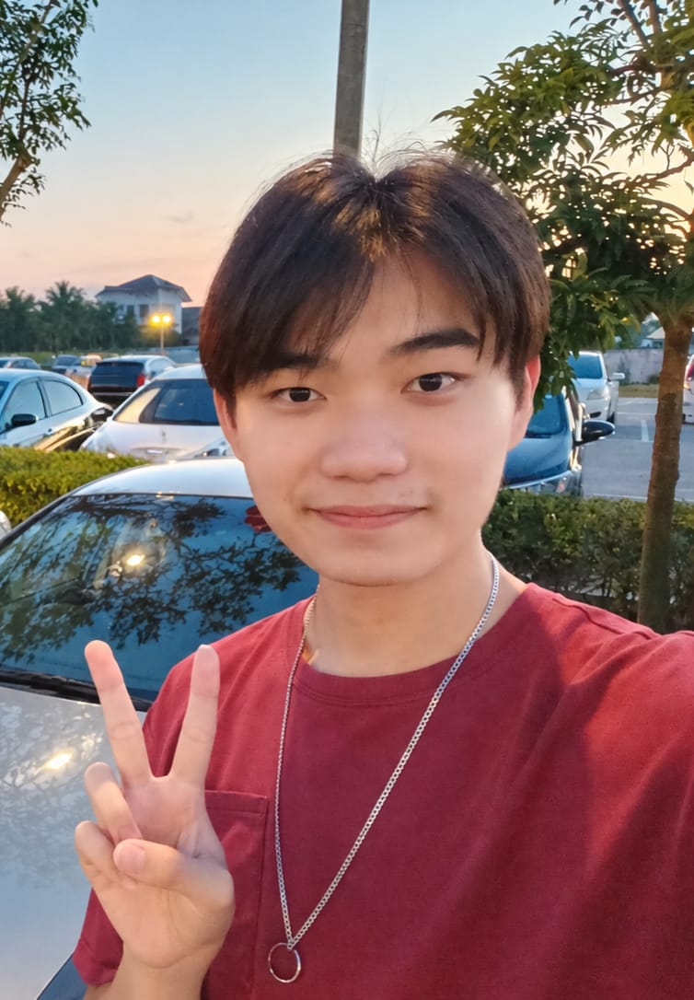

24T 成员 ♡
返回主页认识我们的成员
每个人都有自己的故事，
每个人都是这段旅程中重要的一部分。
Jasmine
Jasmine 是一位很有领导能力的人，拥有着让人信服的气场和责任感。作为一位 Leader，她不仅懂得带领团队前进，也愿意关心和支持身边的人，在大家遇到困难时给予鼓励和帮助。她有自己的想法，也有带领大家一起成长的能力。可以说，有她在，大家就多了一份安心和方向感。

JiaHao
1. 付钱担当
2. 载送担当
3. 贴心担当
4. 暖男担当
Jiahao 是一个非常贴心又温柔的人，总是很懂得关心身边的人，也愿意主动给予帮助和支持。他不仅性格好，而且还是一位非常有实力的富豪潜力股！😂 无论是对朋友还是身边的人，都能感受到他的温暖和善意。最难得的是，他既有一颗善良体贴的心，又有让人羡慕的财富实力。简直就是集温柔、体贴和财富于一身的代表！希望 Jiahao 继续保持这份甜蜜与善良，当然，也别忘了以后发财了请大家吃大餐！🤣💰❤️

Abby
Abby 是一位非常受欢迎的网红，拥有超高人气，走到哪里都自带光环！平时对护肤也特别有研究，家里的护肤品多到可以开一间小型美容店了！😂 从清洁、保湿到各种护肤精华，感觉每一种皮肤问题她都有对应的解决方案。说不定她的护肤品比她的衣服还多，连皮肤都不知道今天应该轮到哪一瓶上场！🤣 不仅人气高，还非常注重保养，简直就是美丽与影响力并存的代表！✨

JunYan
Junyan 是一个非常有安全感的存在，简直就是团队里的专属后勤支援！😂 无论什么时候，身上总是准备了各种各样的东西：糖果、Power Bank、药物等等，感觉只要大家有任何需要，他都能立刻从包包里变出解决方案。肚子饿了有糖果，手机没电有 Power Bank，身体不舒服还有药物，根本就是行走版的便利店加急救箱！🤣 他不仅细心又有准备，也总是默默地照顾和支持身边的人，是一个非常可靠的 Support Type Person。有 Junyan 在，大家出门真的可以少带一半东西了！

YingYan
Yingyan 是一个非常有艺术气息的人，天生就拥有一双发现美的眼睛！她特别喜欢设计，无论是颜色搭配、排版还是创意构思，总是能够展现出自己独特的风格和想法。对于她来说，设计不只是完成一件作品，更是一种表达创意和展现个性的方式。感觉只要给她一张白纸，她就能把它变成一件艺术品！🎨😂 不过，跟她一起设计东西可能要有心理准备，因为她的创意一旦启动，大家可能就要准备好不断修改到最完美为止！

Jackson
Jackson 是一位天生的戏剧高手，对 Drama 可以说是非常专业，无论是表情、动作还是情绪，都能掌握得恰到好处。感觉只要给他一个舞台，他就能立刻进入角色，演技随时在线！不管是悲剧、喜剧还是充满戏剧性的场面，他都能轻松驾驭。说不定哪天连生活中的小事情都能被他演成一部连续剧，绝对是朋友圈里的最佳男主角！

Yang Tai
Yangtai 是一位充满运动细胞的人，简直就是为 Sport 而生的！无论是哪一种运动，都能看到他积极参与的身影，身体素质和运动能力都相当不错。对运动充满热情，也有着不轻易放弃的精神。感觉只要有比赛，Yangtai 就会自动进入战斗模式，随时准备大展身手！不过，大家还是要小心一点，跟他比赛之前最好先做好热身，不然输得太快可能连热身的机会都没有！

Koid
Koid 是一个聪明又帅气的人，不仅拥有出众的外表，还有着让人佩服的智慧和能力。平时很喜欢运动，充满活力，对自己喜欢的事情总是充满热情。他也是一个非常乐于给予支持的人，无论是在生活上还是其他方面，总是愿意伸出援手，给身边的人鼓励和帮助。有他在，很多事情都会变得更有动力、更有信心。当然，帅气归帅气，聪明归聪明，偶尔也别太自恋啦，毕竟地球不是绕着你转的！

Yong Le
Yong Le 是一个非常安静的人，安静到有时候会让人怀疑他是不是正在进行省电模式 😂。除了安静，还是非常安静，仿佛他的字典里没有“主动说话”这几个字。不过，虽然话不多，但这也是他独特的个人风格。平时总是默默地待在自己的小世界里，不争不抢，低调得很。只能说，Yong Le 的安静程度已经不是普通级别，而是可以申请世界纪录的那种！

Yi Mei
Yimei 是一个运动和学习都非常厉害的人，简直就是“文武双全”的代表！📚🏃♀️ 不仅在学习方面表现出色，遇到运动也完全不输，感觉无论是拿起书本还是走上运动场，都能马上进入认真模式。😂 学习有实力，运动有体力，这种全能型选手真的让人有点羡慕！希望 Yimei 继续保持这份热情，在学习和运动的路上都越来越厉害，成为一个真正的全能选手！✨🏆

YongHan
Yonghan 是一个很难用几个词来形容的人，他有着自己独特的个性和魅力，可能平时不一定是最容易被定义的那种人，但只要他出现在大家身边，气氛就会变得特别不一样。和他在一起的时候，总是会有一种轻松、开心的感觉，大家很自然地就会笑起来。😂 有时候可能不需要特别做什么，他的存在本身就已经足够让大家开心了。希望 Yonghan 继续保持这份独特，因为有些人不需要解释太多，只要在一起，就已经是一种快乐。 ❤️

Qiao Ying
Qiaoying 是一个逻辑思维非常强的人，头脑清晰，分析事情总是有自己的一套方法，遇到问题也能冷静地思考，并且快速找到解决方案。她在学习方面更是非常厉害，可以说是学霸级别的人物，学习能力强，理解能力也很好，很多东西一点就通。跟她讨论问题，感觉自己的脑袋也需要升级一下才跟得上！😂 简直就是智慧与实力并存的代表，希望她继续保持这份优秀，未来在自己喜欢的领域发光发热！✨

Wen De
Wende 最近可以说是房地产领域的潜力股，对 Property 的了解越来越深入，简直快要变成半个房地产专家了！从房子、地点到各种房地产知识，感觉他现在随时都能跟你聊上一整天。说不定哪天大家买房都不用找 Agent，直接找 Wende 就可以了！😂 继续保持这份学习热情，说不定未来不仅自己拥有好几间房子，还能成为大家的置业顾问，带领大家一起实现买房梦！
